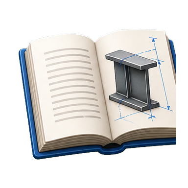
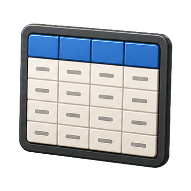
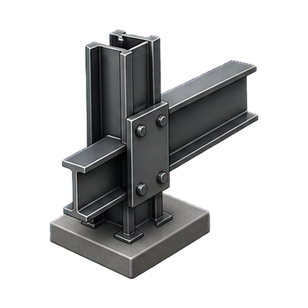
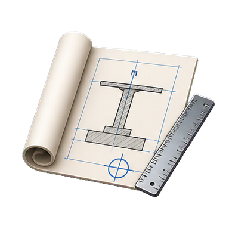

Conceptos esenciales y referencias de montaje del material del curso.

01
Esquema estructural
Distingue entramados articulados, vigas continuas y pórticos rígidos. La idealización del nudo condiciona cómo se transmiten el momento y el giro.
ArticuladoContinuoRígido
02
Clasificación de secciones
Las clases 1–4 describen la influencia del pandeo local. En clase 4 se emplean propiedades eficaces; clasifica con la geometría y el acero del perfil.
ε = √(235 / fy)
03
Pandeo de barras
La longitud de pandeo, los apoyos y el eje considerado afectan a la carga crítica. Comprueba por separado los dos ejes principales.
Ncr = π² E I / Lcr²
04
Vuelco lateral
En vigas flectadas puede combinarse el desplazamiento lateral del ala comprimida con la torsión de la sección. Revisa arriostramientos y longitud sin sujetar.
FlexiónTorsiónArriostramiento
05
Uniones y tornillos
El detalle define transferencia, agujeros y elementos de unión. El prontuario resume la resistencia de tornillos a cortante.
Fv,Rd = αv fub A / γM2
06
Estabilidad y juntas
Dispón arriostramientos en direcciones y planos adecuados. Las juntas de dilatación separan cuerpos para admitir los movimientos del proyecto.
ArriostramientosDilatación
Recorrido: consulta las tablas, desarrolla la práctica guiada y contrasta las uniones con tus planos.
Cuestiones originales · Cuaderno de práctica n.º 3
Vigas aligeradas: tipos y ventajas frente a vigas de alma llena de la misma serie y peso.
Principios de las vigas de celosía indeformables y aplicación a una cercha Polonceau compuesta.
Tipos de nudos en pórticos simples de dintel quebrado. Acompaña con ejemplos gráficos.
Apoyo indirecto en vigas: cuándo se utiliza y resolución en muro de hormigón de 250 mm con IPE 360.
Forjados compuestos: elementos, comportamiento y ejemplo con todos sus componentes.
Viga mixta: trabajo de cada elemento, función y posición de los conectadores.
Organización de barras y nudos en una cercha indeformable; detalle de una cercha tipo inglés.
Unión de un pórtico a la cimentación: tipologías y ejemplos gráficos.
Diferencias entre soporte mixto y perfil HEB relleno de hormigón.
Apoyo articulado y empotrado en estructura mixta; solución de nudos intermedios del entramado.
CONSULTA RÁPIDA
Prontuario y tablas
Valores de referencia recuperados del material v6.

Tornillería métrica
Métrica
Área resistente As
Agujero d0
M12
84,3 mm²
13 mm
M16
157 mm²
18 mm
M20
245 mm²
22 mm
M24
353 mm²
26 mm
M30
561 mm²
33 mm
Confirma métrica, clase y agujero con el detalle de unión del proyecto.
Lectura del detalle de taller
Elemento
Datos que debes localizar
Unidad
Perfil
Serie, tamaño, longitud, orientación y clase de sección
mm
Chapa / cartela
Contorno, dimensiones, espesor y posición
mm
Tornillos
Métrica, clase, patrón, distancias y agujero
mm
Soldadura
Tipo, longitud y garganta indicadas en el plano
mm
Apoyo / junta
Tipo de apoyo, holgura y dirección de movimiento
mm
Fv,Rd = (αv · fub · A) / γM2
Tablas de perfiles recuperadas del documento original
Hojas escaneadas incorporadas desde «FOTOGRAFIAS AULA VIRTUAL.doc». Pulsa una para leerla ampliada.
CUADERNO DE PRÁCTICA N.º 3 · PARTE 2
Cercha Polonceau compuesta
Enunciado, alzado y datos de taller recuperados del material que has cargado.

EJERCICIO DE TALLER · ENTREGA EN A3
Desarrollo de la cercha y sus nudos
Define gráficamente la ejecución completa y calcula la altura máxima según la pendiente del par.
Dispón 5 correas por faldón, cada una coincidente con un nudo.
Resuelve 4 nudos representativos, distintos de los apoyos y asignados por el profesor.
Dibuja planta y alzado, con despiece de todos los elementos y la transmisión de compresiones.
Datos de partida del enunciado
Elemento
Perfil / solución
Dato
Cordones comprimidos
2L 140 × 13
Acero laminado
Cordones traccionados
2L 90 × 8
Acero laminado
Relleno a compresión
2L 80 × 8
Acero laminado
Relleno a tracción
1L 60 × 6
Acero laminado
Nudos
Cartelas y unión soldada
Cartela 10 mm · llantas 10 mm
Placas de base y capitel
Acero
22 mm
Correas
IPE 180
5 por faldón · una en cada nudo
Práctica complementaria · pórtico, pilar mixto y forjado compuesto
Parte 3 del cuaderno original. La nave plantea luces de 6 m entre pórticos y cerchas, 72 m de longitud total y una zona de oficinas de 18 m.
Conjunto
Datos conservados en el enunciado
Pilar mixto
Perfil HEB 220; placa de base 350 × 350 × 22 mm; 4 pernos Ø20. Pilar de hormigón armado 500 × 500 mm con 12 barras Ø16.
Armadura transversal y conectadores
Cercos Ø8 cada 200 mm, atados a la armadura longitudinal. Conectadores en cercos Ø8 cada 200 mm, alternados y soldados al perfil.
Pórtico de dintel quebrado
Vigas Void obtenidas de IPE 180; refuerzos en nudos con IPE 180; rigidizadores de 10 mm; uniones soldadas.
Cimentación
Zapatas aisladas de 1500 × 1500 × 700 mm; parrilla en dos direcciones con Ø16 cada 200 mm.
Forjado compuesto
Brochal IPE 270; chapa galvanizada de 80 mm; nervaduras cada 300 mm; luz máxima 3100 mm; canto total 200 mm; hormigón H-30; conectores soldados según detalle.
La entrega original se realiza en formato DIN A3, con nombre, grupo y fecha. Los detalles se dibujan en planta y alzado, con despiece y solución de las compresiones entre soportes.
El progreso se guarda en este navegador.
APUNTES DE CLASE
Tipologías, estabilidad y montaje
Resumen de consulta de los temas estructurales del material v6.

Esquemas estructurales
Isostático: las reacciones se obtienen con las ecuaciones de equilibrio. Viga continua: la continuidad modifica la distribución de esfuerzos y giros. Pórtico rígido: los nudos transmiten momento y contribuyen a la estabilidad.
Clasificación y pandeo
Clasifica las secciones antes de elegir propiedades resistentes. En barras comprimidas, registra longitud de cálculo, eje de pandeo y condiciones de apoyo; comprueba ambos ejes.
Nb,Rd = χ · A · fy / γM1
Uniones articuladas y rígidas
Un nudo articulado permite el giro previsto y transmite las acciones asignadas al detalle. Un nudo rígido limita el giro relativo; revisa continuidad de alas, alma, chapas, soldaduras y rigidizadores.
Estabilidad horizontal
Dispón arriostramiento en más de una dirección y en planos triangulados adecuados. Comprueba su continuidad hasta los apoyos y los nudos de conexión.
Juntas de dilatación
La junta separa cuerpos para admitir movimientos. Revisa si la solución duplica pilares o vigas, dónde está el apoyo deslizante y qué elementos deben permanecer separados.
Secuencia de montaje
Prepara y marca piezas; presenta los elementos; alinea ejes y niveles; ejecuta las uniones conforme al detalle; verifica aplomado, holguras y acabado.
Las dimensiones y la solución final se toman de los planos y especificaciones del proyecto.
PARTE 4 · DOCUMENTO ORIGINAL
Fotografías del Aula Virtual v6
Galería recuperada del documento cargado, ordenada según sus pies de foto. Selecciona una para ampliarla.